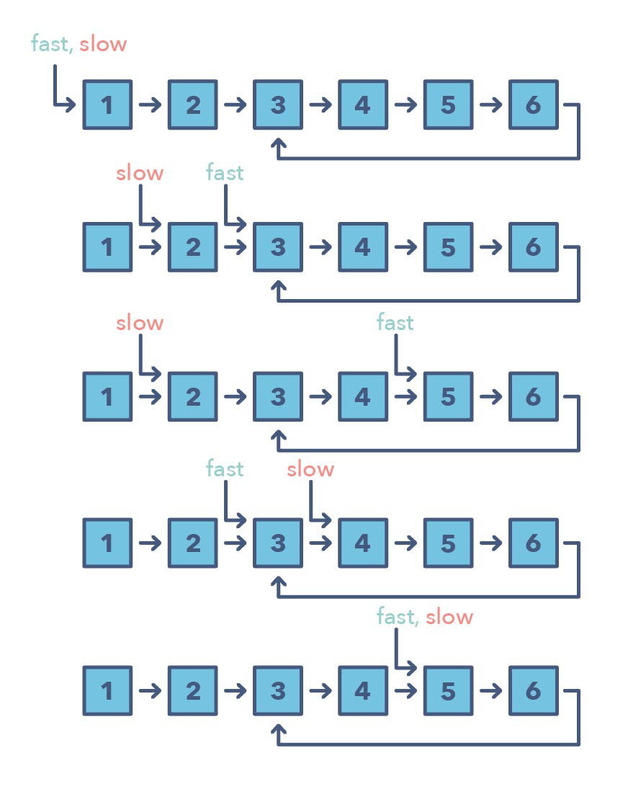

Competitve Programming Starting Kit
William Lin's Introductory Video1) List of Blind 74 Leetcode Questions (Beginner Friendly)
Array
Dynamic Programming
Graph
Interval
Linked List
String
Tree
- Maximum Depth of Binary Tree
- Same Tree
- Invert/Flip Binary Tree
- Binary Tree Maximum Path Sum
- Binary Tree Level Order Traversal
- Serialize and Deserialize Binary Tree
- Subtree of Another Tree
- Construct Binary Tree from Preorder and Inorder Traversal
- Validate Binary Search Tree
- Kth Smallest Element in a BST
- Lowest Common Ancestor of BST
- Implement Trie (Prefix Tree)
- Add and Search Word
- Word Search II
2) 14 Patterns to Ace Any Coding Interview Question
1. Sliding Window
The Sliding Window pattern is used to perform a required operation on a specific window size of a given array or linked list, such as finding the longest subarray containing all 1s. Sliding Windows start from the 1st element and keep shifting right by one element and adjust the length of the window according to the problem that you are solving. In some cases, the window size remains constant and in other cases the sizes grows or shrinks.
Following are some ways you can identify that the given problem might require a sliding window:
- The problem input is a linear data structure such as a linked list, array, or string
- You’re asked to find the longest/shortest substring, subarray, or a desired value
Common problems you use the sliding window pattern with:
- Maximum sum subarray of size ‘K’ (easy)
- Longest substring with ‘K’ distinct characters (medium)
- String anagrams (hard)
2. Two Pointers or Iterators
Two Pointers is a pattern where two pointers iterate through the data structure in tandem until one or both of the pointers hit a certain condition. Two Pointers is often useful when searching pairs in a sorted array or linked list; for example, when you have to compare each element of an array to its other elements.
Two pointers are needed because with just pointer, you would have to continually loop back through the array to find the answer. This back and forth with a single iterator is inefficient for time and space complexity — a concept referred to as asymptotic analysis. While the brute force or naive solution with 1 pointer would work, it will produce something along the lines of O(n²). In many cases, two pointers can help you find a solution with better space or runtime complexity.
Ways to identify when to use the Two Pointer method:
- It will feature problems where you deal with sorted arrays (or Linked Lists) and need to find a set of elements that fulfill certain constraints
- The set of elements in the array is a pair, a triplet, or even a subarray
Here are some problems that feature the Two Pointer pattern:
- Squaring a sorted array (easy)
- Triplets that sum to zero (medium)
- Comparing strings that contain backspaces (medium)
3. Fast and Slow pointers
The Fast and Slow pointer approach, also known as the Hare & Tortoise algorithm, is a pointer algorithm that uses two pointers which move through the array (or sequence/linked list) at different speeds. This approach is quite useful when dealing with cyclic linked lists or arrays.
By moving at different speeds (say, in a cyclic linked list), the algorithm proves that the two pointers are bound to meet. The fast pointer should catch the slow pointer once both the pointers are in a cyclic loop.
How do you identify when to use the Fast and Slow pattern?
- The problem will deal with a loop in a linked list or array
- When you need to know the position of a certain element or the overall length of the linked list
When should I use it over the Two Pointer method mentioned above?
- There are some cases where you shouldn’t use the Two Pointer approach such as in a singly linked list where you can’t move in a backwards direction. An example of when to use the Fast and Slow pattern is when you’re trying to determine if a linked list is a palindrome
Problems featuring the fast and slow pointers pattern:
- Linked List Cycle (easy)
- Palindrome Linked List (medium)
- Cycle in a Circular Array (hard)
4. Merge Intervals
The Merge Intervals pattern is an efficient technique to deal with overlapping intervals. In a lot of problems involving intervals, you either need to find overlapping intervals or merge intervals if they overlap. The pattern works like this:
Given two intervals (‘a’ and ‘b’), there will be six different ways the two intervals can relate to each other:
Understanding and recognizing these six cases will help you help you solve a wide range of problems from inserting intervals to optimizing interval merges.
How do you identify when to use the Merge Intervals pattern?
- If you’re asked to produce a list with only mutually exclusive intervals
- If you hear the term “overlapping intervals”
Merge interval problem patterns:
- Intervals Intersection (medium)
- Maximum CPU Load (hard)
5. Cyclic sort
This pattern describes an interesting approach to deal with problems involving arrays containing numbers in a given range. The Cyclic Sort pattern iterates over the array one number at a time, and if the current number you are iterating is not at the correct index, you swap it with the number at its correct index. You could try placing the number in its correct index, but this will produce a complexity of O(n^2) which is not optimal, hence the Cyclic Sort pattern.
How do I identify this pattern?
- They will be problems involving a sorted array with numbers in a given range
- If the problem asks you to find the missing/duplicate/smallest number in an sorted/rotated array
Problems featuring cyclic sort pattern:
- Find the Missing Number (easy)
- Find the Smallest Missing Positive Number (medium)
6. In-place reversal of linked list
In a lot of problems, you may be asked to reverse the links between a set of nodes of a linked list. Often, the constraint is that you need to do this in-place, i.e., using the existing node objects and without using extra memory. This is where the above mentioned pattern is useful.
This pattern reverses one node at a time starting with one variable (current) pointing to the head of the linked list, and one variable (previous) will point to the previous node that you have processed. In a lock-step manner, you will reverse the current node by pointing it to the previous before moving on to the next node. Also, you will update the variable “previous” to always point to the previous node that you have processed.
How do I identify when to use this pattern:
- If you’re asked to reverse a linked list without using extra memory
Problems featuring in-place reversal of linked list pattern:
- Reverse a Sub-list (medium)
- Reverse every K-element Sub-list (medium)
7. Tree BFS
This pattern is based on the Breadth First Search (BFS) technique to traverse a tree and uses a queue to keep track of all the nodes of a level before jumping onto the next level. Any problem involving the traversal of a tree in a level-by-level order can be efficiently solved using this approach.
The Tree BFS pattern works by pushing the root node to the queue and then continually iterating until the queue is empty. For each iteration, we remove the node at the head of the queue and “visit” that node. After removing each node from the queue, we also insert all of its children into the queue.
How to identify the Tree BFS pattern:
- If you’re asked to traverse a tree in a level-by-level fashion (or level order traversal)
Problems featuring Tree BFS pattern:
- Binary Tree Level Order Traversal (easy)
- Zigzag Traversal (medium)
8. Tree DFS
Tree DFS is based on the Depth First Search (DFS) technique to traverse a tree.
You can use recursion (or a stack for the iterative approach) to keep track of all the previous (parent) nodes while traversing.
The Tree DFS pattern works by starting at the root of the tree, if the node is not a leaf you need to do two things:
- Decide whether to process the current node now (pre-order), or between processing two children (in-order) or after processing both children (post-order)
- Make two recursive calls for both the children of the current node to process them
How to identify the Tree DFS pattern:
- If you’re asked to traverse a tree with in-order, preorder, or postorder DFS
- If the problem requires searching for something where the node is closer to a leaf
Problems featuring Tree DFS pattern:
- Sum of Path Numbers (medium)
- All Paths for a Sum (medium)
9. Two heaps
In many problems, we are given a set of elements such that we can divide them into two parts. To solve the problem, we are interested in knowing the smallest element in one part and the biggest element in the other part. This pattern is an efficient approach to solve such problems.
This pattern uses two heaps; A Min Heap to find the smallest element and a Max Heap to find the biggest element. The pattern works by storing the first half of numbers in a Max Heap, this is because you want to find the largest number in the first half. You then store the second half of numbers in a Min Heap, as you want to find the smallest number in the second half. At any time, the median of the current list of numbers can be calculated from the top element of the two heaps.
Ways to identify the Two Heaps pattern:
- Useful in situations like Priority Queue, Scheduling
- If the problem states that you need to find the smallest/largest/median elements of a set
- Sometimes, useful in problems featuring a binary tree data structure
Problems featuring this pattern:
- Find the Median of a Number Stream (medium)
10. Subsets
A huge number of coding interview problems involve dealing with Permutations and Combinations of a given set of elements. The pattern Subsets describes an efficient Breadth First Search (BFS) approach to handle all these problems.
The pattern looks like this:
Given a set of [1, 5, 3]
- Start with an empty set: [[]]
- Add the first number (1) to all the existing subsets to create new subsets: [[], [1]];
- Add the second number (5) to all the existing subsets: [[], [1], [5], [1,5]];
- Add the third number (3) to all the existing subsets: [[], [1], [5], [1,5], [3], [1,3], [5,3], [1,5,3]]
Here is a visual representation of the Subsets pattern:
How to identify the Subsets pattern:
- Problems where you need to find the combinations or permutations of a given set
Problems featuring Subsets pattern:
- Subsets With Duplicates (easy)
- String Permutations by changing case (medium)
11. Modified binary search
Whenever you are given a sorted array, linked list, or matrix, and are asked to find a certain element, the best algorithm you can use is the Binary Search. This pattern describes an efficient way to handle all problems involving Binary Search.
The patterns looks like this for an ascending order set:
- First, find the middle of start and end. An easy way to find the middle would be: middle = (start + end) / 2. But this has a good chance of producing an integer overflow so it’s recommended that you represent the middle as: middle = start + (end — start) / 2
- If the key is equal to the number at index middle then return middle
- If ‘key’ isn’t equal to the index middle:
- Check if key < arr[middle]. If it is reduce your search to end = middle — 1
- Check if key > arr[middle]. If it is reduce your search to end = middle + 1
Here is a visual representation of the Modified Binary Search pattern:

Problems featuring the Modified Binary Search pattern:
- Order-agnostic Binary Search (easy)
- Search in a Sorted Infinite Array (medium)
12. Top K elements
Any problem that asks us to find the top/smallest/frequent ‘K’ elements among a given set falls under this pattern.
The best data structure to keep track of ‘K’ elements is Heap. This pattern will make use of the Heap to solve multiple problems dealing with ‘K’ elements at a time from a set of given elements. The pattern looks like this:
- Insert ‘K’ elements into the min-heap or max-heap based on the problem
- Iterate through the remaining numbers and if you find one that is larger than what you have in the heap, then remove that number and insert the larger one
There is no need for a sorting algorithm because the heap will keep track of the elements for you.
How to identify the Top ‘K’ Elements pattern:
- If you’re asked to find the top/smallest/frequent ‘K’ elements of a given set
- If you’re asked to sort an array to find an exact element
13. K-way Merge
K-way Merge helps you solve problems that involve a set of sorted arrays.
Whenever you’re given ‘K’ sorted arrays, you can use a Heap to efficiently perform a sorted traversal of all the elements of all arrays. You can push the smallest element of each array in a Min Heap to get the overall minimum. After getting the overall minimum, push the next element from the same array to the heap. Then, repeat this process to make a sorted traversal of all elements.
The pattern looks like this:
- Insert the first element of each array in a Min Heap
- After this, take out the smallest (top) element from the heap and add it to the merged list
- After removing the smallest element from the heap, insert the next element of the same list into the heap
- Repeat steps 2 and 3 to populate the merged list in sorted order
How to identify the K-way Merge pattern:
- The problem will feature sorted arrays, lists, or a matrix
- If the problem asks you to merge sorted lists, find the smallest element in a sorted list
Problems featuring the K-way Merge pattern:
- Merge K Sorted Lists (medium)
- K Pairs with Largest Sums (Hard)
14. Topological sort
Topological Sort is used to find a linear ordering of elements that have dependencies on each other. For example, if event ‘B’ is dependent on event ‘A’, ‘A’ comes before ‘B’ in topological ordering.
This pattern defines an easy way to understand the technique for performing topological sorting of a set of elements.
The pattern works like this:
- Initialization
- Store the graph in adjacency lists by using a HashMap
- To find all sources, use a HashMap to keep the count of in-degreesBuild the graph and find in-degrees of all vertices
- Build the graph from the input and populate the in-degrees HashMap
- Find all sources
- All vertices with ‘0’ in-degrees will be sources and are stored in a Queue
- Sort
- For each source, do the following things:
- Add it to the sorted list
- Get all of its children from the graph
- Decrement the in-degree of each child by 1
- If a child’s in-degree becomes ‘0’, add it to the sources Queue
- Repeat (a), until the source Queue is empty
- For each source, do the following things:
How to identify the Topological Sort pattern:
- The problem will deal with graphs that have no directed cycles
- If you’re asked to update all objects in a sorted order
- If you have a class of objects that follow a particular order
Problems featuring the Topological Sort pattern:
- Task scheduling (medium)
- Minimum height of a tree (hard)